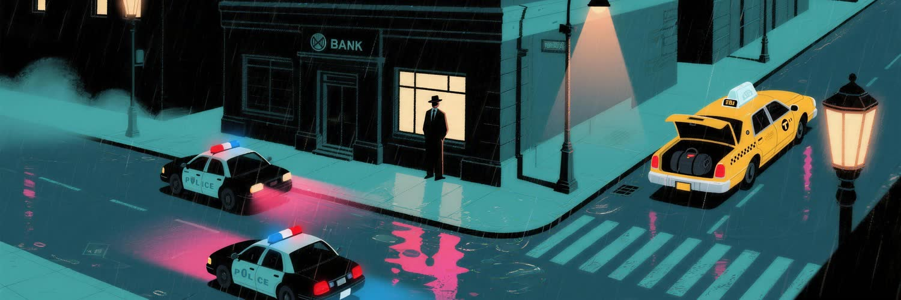
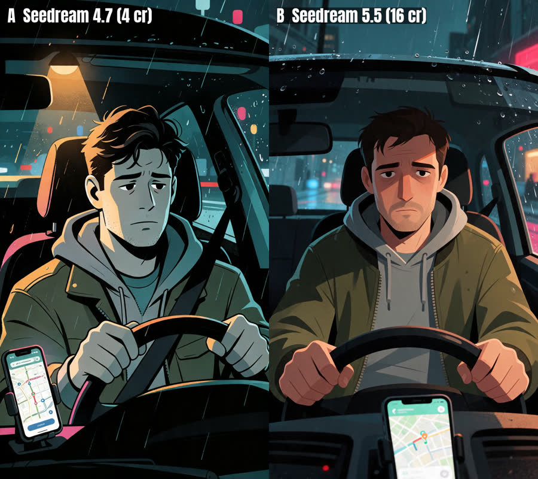
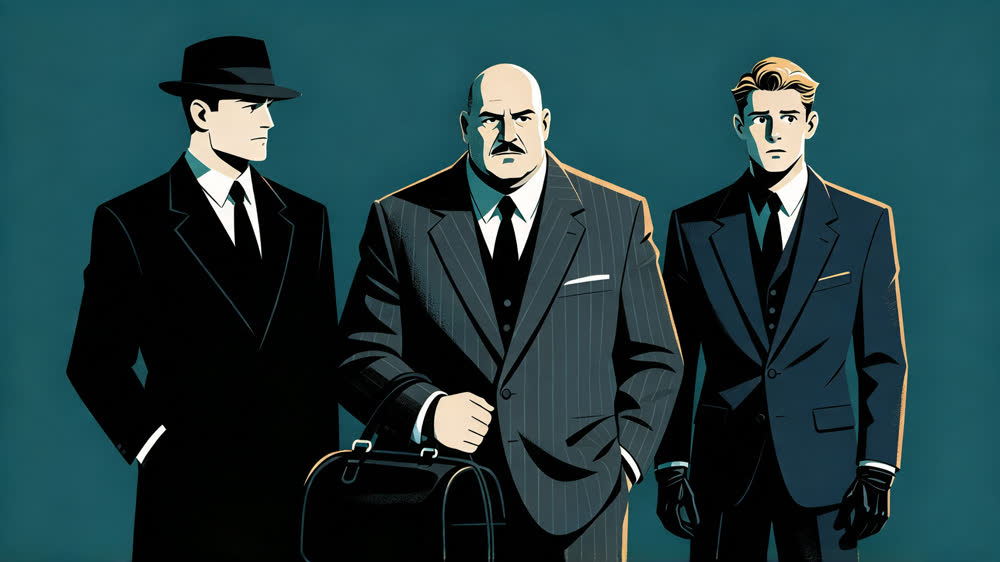
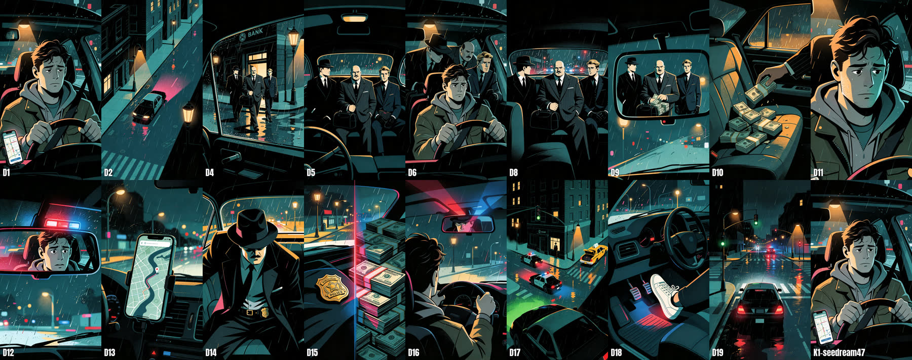
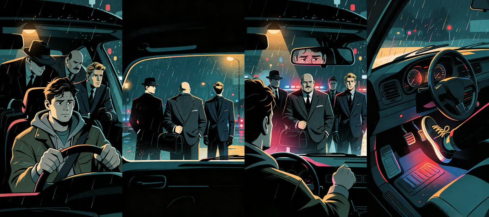
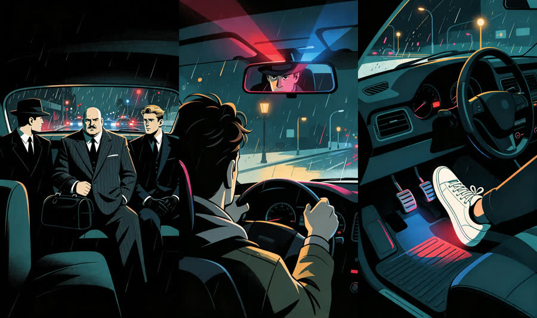
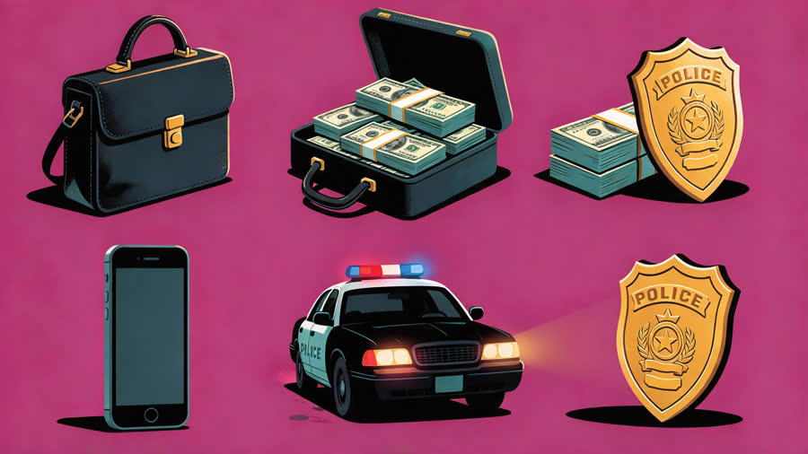
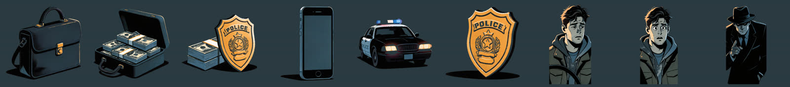
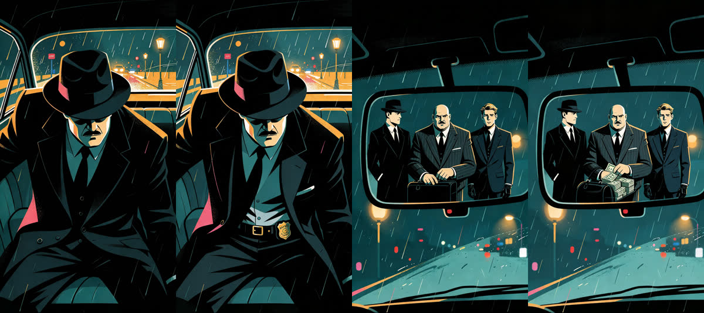
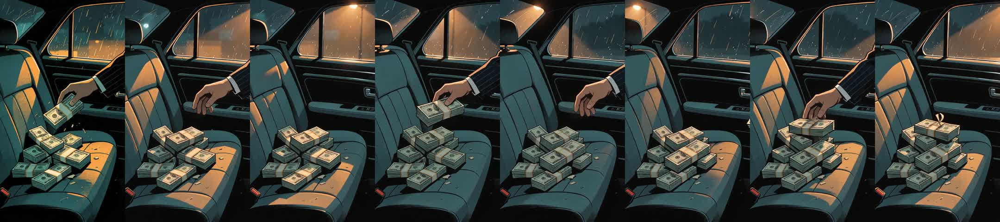

An 86-second crime story where you, the viewer, make the call. No camera and no animator: every image, the voice, the sound and the edit came from AI tools, directed by one person with an AI coding agent. Below is the full pipeline, the real costs, the failures, and every prompt.
The format is "what would you do": second person, one ordinary situation that turns criminal, a twist right before the end, and a choice the viewer answers in the comments. Write it for the ear. Short sentences, and every line should be something you can show.
It's two fourteen A.M. You've been driving for eleven hours. One more ride, and you're done. The pickup is outside a bank. Three men in suits. One heavy black bag. They don't put it in the trunk. They keep it on their laps. The guy behind you says one thing: "Just drive. Don't look back." You pull out. Two blocks later, you hear it. Sirens. Far behind you... but getting closer. You check the mirror. The big man in the middle opens the bag. Cash. Stacks of it. He drops five bricks on your passenger seat. "That's fifty thousand. Keep driving, and it's yours." Fifty thousand dollars. That's every bill you owe. That's three years of rent. The sirens are louder now. Red and blue fill your mirror. Your phone buzzes. Rider changed destination. The new stop: an empty parking lot by the river. Then you see it. The man behind you leans forward, and his jacket falls open. Clipped to his belt... is a police badge. A dirty cop? Or a setup? If you stop now... who scares you more? The cops behind you... or the cop inside your car? The light turns green. The sirens are one block away. Drive... or stop? Comment DRIVE, or STOP.
Before any scene, make two images that define the style. Every later prompt points at them, so all 19 scenes share one palette and one way of drawing faces.

Wide panoramic illustration of a rainy American city street at night seen from above at a low angle. On the right side, a yellow taxi speeds away with its trunk slightly open and a black duffel bag inside, two police cars with red and blue lights chasing far behind. In the middle, a dark bank building with one window lit, and a man in a fedora standing in the shadow of an alley watching. Left side is calm dark empty wet street with soft teal fog. Thick clean black outlines, flat cel shading, muted teal night palette, warm amber streetlights, neon pink and red-blue reflections on wet asphalt, cinematic noir mood, subtle film grain, no text, no letters, no logos.
Square avatar illustration, close-up head and shoulders of a simple cartoon man with a round pale white face, short black hair, worried side glance, wearing a dark fedora hat and a black suit with a loosened tie, holding a small black duffel bag strap on his shoulder. Centered, large in frame, plain dark teal background with a soft warm amber rim light from one side and a faint neon pink glow on the other. Thick clean black outlines, flat cel shading, noir crime mood, subtle film grain, no text, no letters, no logo.
Generate each recurring character once, then pass that image as a reference in every scene. Repeating a text description is not enough to keep a face the same.

Flat noir illustration in exactly the art style of [STYLE REF]: clean flat shapes, thin dark outlines, muted teal night palette, warm amber streetlight, small neon pink and red-blue accents, subtle grain. Draw faces like [AVATAR REF] (pale flat skin, simple black brows and eyes, sharp profile lines) but do NOT copy his hat or suit. Main character: a tired American rideshare driver in his early 30s, short messy dark brown hair, light stubble, dark circles under his eyes, grey hoodie under an open olive-green bomber jacket. Shot: medium close-up from the passenger seat at night, he sits behind the steering wheel of a sedan, both hands on the wheel, rain drops on the windshield, warm amber streetlight across his face, teal shadows, a phone mounted on the dashboard glowing with a rideshare map. Vertical 9:16 composition, character centered in the middle third. No text, no letters, no logos, no watermark.

Flat noir illustration in exactly the art style of [STYLE REF]: clean flat shapes, thin dark outlines, muted teal palette, warm amber light, subtle grain. Character lineup of three gangsters standing side by side, full body, front view, plain dark teal background, even lighting. LEFT: the man from [AVATAR REF], the leader, sharp profile face, black fedora, black suit, white shirt, black tie, calm and cold. MIDDLE: a heavy-set bald man in his 50s with a thin mustache, charcoal pinstripe suit, no hat, holding a black leather duffel bag. RIGHT: a young lanky man in his 20s, slicked-back blond hair, navy suit, black leather gloves, nervous eyes. No text, no letters, no logos, no watermark.
Every scene prompt is the same shared prefix, one scene line, and the same shared ending. [DRIVER] and [GANG] stand for the full character descriptions plus their reference image. Two scenes were free: the bank is a crop of the style reference, and the hands on the wheel come from the driver test.

Flat noir illustration in exactly the art style of [STYLE REF]: clean flat shapes, thin dark outlines, muted teal night palette, warm amber streetlights, small neon pink and red-blue accents, subtle grain, cinematic framing.
Rain only outside the car glass, never inside the car. Vertical 9:16, main subject in the middle third. No text, no letters, no numbers, no logos, no watermark.
[DRIVER] Close-up inside a car at night: a smartphone in a dashboard mount glowing with a rideshare map, above it the rear-view mirror reflects the driver's tired half-closed eyes.
High-angle wide shot of a lone dark sedan driving down an empty rainy American city street at night, wet asphalt reflecting amber streetlights, tall dark buildings.
[GANG] The three men walk out of a dark bank doorway in the rain toward the camera, seen through the wet passenger window of a car; amber street lamp, puddles.
[GANG] View from the driver seat looking back into the back seat: the three men squeezed side by side, the black leather bag held on their laps, dim cabin light, rainy window behind them.
[DRIVER] [GANG] Close-up: the leader leans forward from the back seat close to the driver's ear, fedora shadow over his eyes; the driver in the foreground stares ahead, tense, gripping the wheel.
Car interior seen from the front passenger seat turned toward the rear: exactly three men from [GANG REF] sit side by side INSIDE the back seat (leader in black fedora, heavy bald man with mustache holding the black leather bag on his lap, young blond man with black gloves). Through the rear window behind their heads, far down the rainy street, tiny red and blue police lights. (v2, the first version failed)
[GANG] Close-up of a car rear-view mirror; in the reflection the heavy bald man opens the black leather bag, revealing thick stacks of hundred-dollar bills.
Close-up of a car passenger seat at night: five thick bricks of hundred-dollar bills with paper bands dropped on the seat, a hand in a dark pinstripe sleeve letting go of the last one, amber light from outside.
[DRIVER] Close-up of the driver's face, sweat on his forehead, eyes wide, staring down to the side at something on the passenger seat, warm amber light on one side, teal shadow on the other.
[DRIVER] Close-up of the car rear-view mirror flooded with flashing red and blue police light, the driver's frightened eyes reflected in it.
Close-up of a smartphone in a car dashboard mount at night, the screen shows a map with a route line ending at a pin beside a dark river, a notification banner at the top made of simple shapes only.
[GANG] Extreme close-up of the leader's waist as he leans forward in the back seat: his black suit jacket falls open, revealing a gold police badge clipped to his leather belt, low amber light.
Split composition: left half a gold police badge on dark cloth, right half thick stacks of hundred-dollar bills, divided by a sharp vertical beam of red and blue light.
Over-the-shoulder shot from just behind the driver's head inside a car: the driver from [DRIVER REF] (messy dark brown hair, olive-green jacket) grips the steering wheel. At the top center, the rear-view mirror shows only the cold eyes and black fedora of the leader from [GANG REF], sitting in the back seat. Red and blue police light flashes across the mirror and the car ceiling. Only these two people. (v2, the first version failed)
Rainy empty city intersection at night, a traffic light turning green, wet road reflections in green and amber, the dark hood of a sedan in the foreground.
Side close-up of a car footwell at night: a gas pedal and a brake pedal side by side, the driver's right foot in a white sneaker hovering in the air between the two pedals, not touching either one, dim light, red and blue light flickering on the floor mat. (v2, the first version failed)
Wide shot from behind a dark sedan stopped at a green traffic light at an empty rainy intersection at night, red and blue police lights approaching far behind, amber streetlights.
Three of 17 came back wrong. Read each image for what the story needs, not just whether it looks good.


The first edit only zoomed into still images, and it looked like a slideshow. What makes this style work is that things in the picture move on their own. So each key moment gets three kinds of extra material.
Put several objects on one sheet over a flat magenta background, then key the magenta out and split the sheet into separate transparent files. One generation gives you six objects. Use magenta, not green: green screen eats the dollar bills.

Flat noir illustration in exactly the art style of [STYLE REF]: clean flat shapes, thin dark outlines, muted teal palette, warm amber light, subtle grain. A sheet of six separate objects in a 3x2 grid, each drawn large and centered in its cell: 1) a black leather doctor-style bag, closed, brass clasp; 2) the same black bag wide open and stuffed with stacks of hundred-dollar bills; 3) one thick brick of hundred-dollar bills with a white paper band, seen at a three-quarter angle; 4) a gold police badge shield; 5) a black smartphone seen from the front, its screen completely blank flat dark gray; 6) a black and white American police car seen from the front, red and blue roof lights glowing. Perfectly flat uniform pure magenta background (#FF00FF), no ground, no floor, no cast shadows, no magenta or pink on any object, every object fully separated from the others with wide gaps of background between them, nothing cut off by the frame. No text, no letters, no logos.

Ask for the same image with one thing changed, then swap them on the word that changes the story: the jacket falls open, the bag opens, the light turns green, the driver blinks.

Keep EVERYTHING identical to [SCENE D14]: same composition, framing, camera angle, colors, lighting, style and people. Change ONLY this: the black suit jacket is buttoned and CLOSED, completely covering the belt; no badge visible.
Only the cash drop is real video: Seedance 2.0 Mini, 4 seconds, 720p, first frame = the scene image. 32 credits. Trim the first frames, which come out brighter than the rest.

Keep the exact flat noir illustration style, colors and outlines of the first frame. A hand in a dark pinstripe suit sleeve drops thick bricks of hundred-dollar bills onto the car passenger seat one by one; each brick lands with a small bounce and the paper bands flutter. Warm amber light from passing streetlights sweeps slowly across the seat, rain streaks run down the window outside. Static camera, no zoom, no cuts. No text, no new people.
Record the whole narration at once rather than line by line, so the pacing stays natural. Then cut the picture to the voice.
with-timestamps endpoint. You get the start time of every word, and that is what the edit is built on.Each scene is a web page that draws one moment in time, built in layers: the background plate, the cut-out objects, light, and graphics. Every layer has its own motion, and every change lands on a spoken word.
Keep flashing light under 3 flashes per second. Saturated red flashing is the riskiest for photosensitive viewers. The first render switched red and blue 5 times a second (2.5 full flashes), close to the limit, so it was slowed to about 1.5 flashes a second and re-rendered.